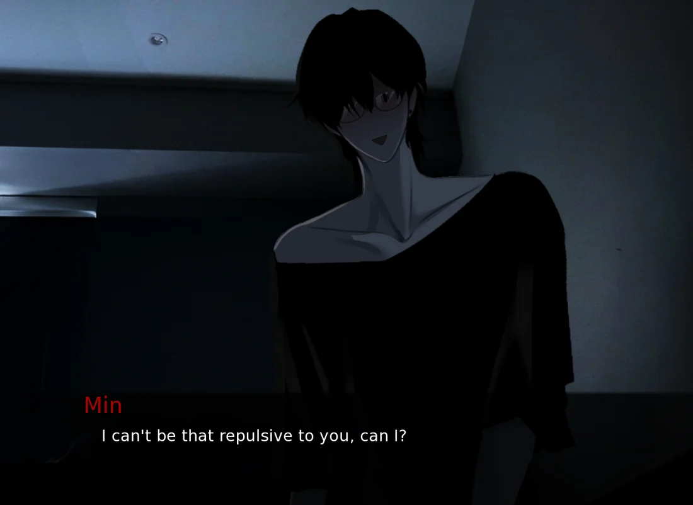
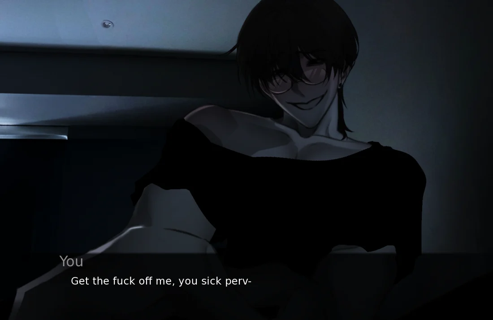
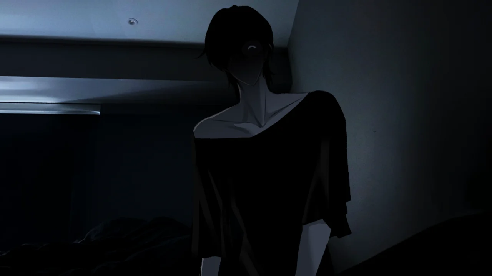
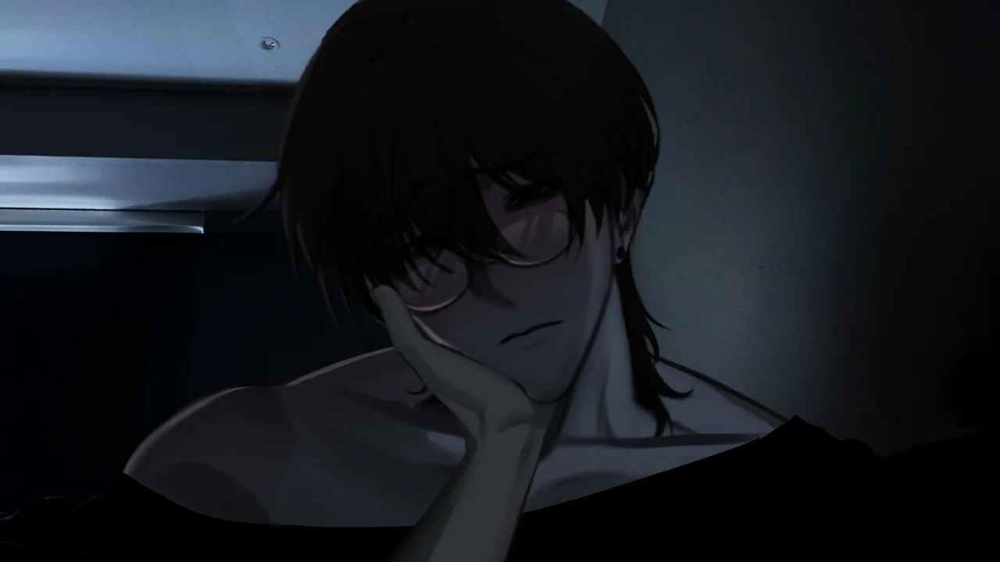

Play SURVIVE MIN Online

SURVIVE MIN
Launching SURVIVE MIN
Preparing the browser build...
Headphones recommended. Landscape mode on mobile. First load may take 30-60 seconds. Press Right-click to save progress.

What Is the Survival Minimum?
Most horror games define survival in resources: ammunition, health packs, daylight hours. SURVIVE MIN strips every one of those away. This isn't a typical survive min game of inventory and escape — there is no weapon. There is no exit door. The only resource you carry into the room is your ability to read a voice that changes temperature without warning.
The survival minimum in this game is attention management. Min doesn't hunt you through hallways; he sits close and watches how you answer. Every pause becomes evidence. A polite reply reads as fear. A brave one reads as invitation.
The question isn't "do you have enough to survive?" — it's "can you control what your words reveal about you when someone is listening too closely?" This is what makes SURVIVE MIN linger. The minimum isn't about managing inventory. It's about managing perception — Min's perception of you, and your own perception of what's actually happening behind each line of dialogue. Strip everything else away, and survival comes down to one thing: knowing which version of Min you're talking to before he tells you himself.
How to Play SURVIVE MIN
SURVIVE MIN is a dialogue-driven visual novel with zero mechanical complexity — and that's exactly why it's dangerous. Originally released as a survive min itch io title by creator FATHER, the survive min game quickly went viral on TikTok for its unsettling intimacy. You click or tap to advance text. When choices appear, you pick one. Min responds. The game remembers. There are no wrong answers on the surface, only answers Min stores away and uses later.
First Run — Play Blind
Do not look up guides. Do not optimize. Answer naturally, the way you would if a real person were watching. Let the ending land — whatever it is, it's your ending first. This baseline run teaches you what Min notices about you specifically.
Second Run — Change the Temperature
If you were warm and trusting in your first run, pull back. If you were guarded and cold, open up. Min reads patterns across choices, not isolated lines. The second run is where you realize how many lines were tests you didn't recognize the first time.
Third Run — Hunt What Shifted
Once you've seen two different outcomes, return to key dialogue branches and experiment. The question changes: it's no longer "what happens if I say this?" but "what was Min actually asking me here?"
Practical Tips
Wear headphones. The audio design carries vocal cues that phone speakers miss — a slight tremor in Min's voice, a pause that's half a beat too long. On desktop, right-click to save, H to hide UI, Ctrl to skip read text. On mobile, use landscape mode. Play in one sitting if you can.
Unlike traditional visual novels where choices branch to clearly labeled routes, SURVIVE MIN uses what the community calls "accumulative reading" — Min builds a model of you across multiple decisions, and the consequences arrive later, sometimes in scenes that feel unrelated to the choice that triggered them. This makes guides less useful than emotional pattern recognition. You survive not by memorizing the right answers, but by learning how Min listens.
SURVIVE MIN — Game Videos & Screenshots
See Min in action before you step into the room. Gameplay footage captures the tone shifts, while screenshots freeze the moments where everything changed in a single line.


In-Game Screenshots




Why Replay SURVIVE MIN?
Most people replay a game to win. SURVIVE MIN players replay for a stranger reason: to understand what just happened to them.
A single run takes about an hour, but the first time you finish — regardless of which ending you got — you'll sit staring at the screen with a question you can't shake: "What if I had been gentler there? Colder there? What if I said nothing?" That echo is the game's real achievement. It doesn't end when the credits roll. It keeps asking.
Death is not failure; it's data. In SURVIVE MIN, every bad ending teaches you something specific about Min — what he hates, what he misunderstands, what makes him feel threatened, what makes him feel too safe. Players who chase all nine endings report that the sixth or seventh run hits differently. Not because the content changed — because you changed. Lines that sounded harmless on your first playthrough now read like clear warnings. A compliment Min gave you in run one becomes a threat when you understand what he was actually praising.
This is the replay loop no competitor site describes well: SURVIVE MIN is a game you play forward but understand backward. The narrative isn't linear — it's cumulative. Your second run's dialogue is identical to your first, but your comprehension of it isn't. Replaying isn't about collecting endings like trophies. It's about finally hearing what Min was really saying the whole time.
All 9 SURVIVE MIN Endings
Nine endings. Nine different answers to the question "who is Min, really?" Each one reveals a different layer of the entity sharing your room. No spoilers on how to reach them — these descriptions tell you what each ending feels like, not which buttons to press. Your first mistake should be yours.
Domesticated
The ending most players chase and few find blind. It requires understanding Min not as a threat to neutralize but as a presence that responds to consistency. Earned through patience, not submission. The room feels different when the night finally ends — quieter, almost tender, but with an edge that makes you wonder who really survived.
Compromise
You make it to morning, but "good" in SURVIVE MIN is relative. This ending feels like a truce more than a victory — Min lets you leave, but the terms are his. Players often describe it as the ending where you survive by becoming someone Min approves of, which raises its own uncomfortable questions.
Trapped
You don't die, but you don't leave either. This ending crawls under your skin precisely because it doesn't end with violence. It ends with a door that won't open and a voice that sounds satisfied. For many players, this is more disturbing than any death — the horror of permanence without resolution.
Curiosity
You pushed when you should have listened. Min warned you — maybe not in words, but in tone — and you kept digging. The death is sudden, but in hindsight it was telegraphed across the entire conversation. Lesson: Min doesn't like being studied.
Rejection
Coldness has consequences. If you consistently push Min away, dismiss his words, treat him as a monster to be endured rather than a presence to be navigated — he notices. This death is harsh and direct. The rejection mirror: you rejected him, now he returns it.
Submission
Giving Min everything he wants is just as dangerous as giving him nothing. This ending punishes players who confuse appeasement with safety. Agreeing too readily, showing no resistance — to Min, that's not love. It's an invitation he accepts literally.
Deception
Min can tell when you're lying. This ending triggers when your choices show a pattern of insincerity — saying what you think he wants to hear while your earlier answers tell a different story. His response is swift and almost clinical. He doesn't just kill you; he lets you know he knew the whole time.
Fear
Panic has a smell in this game, and Min breathes it in. Choices made from visible terror — stammering, pleading, desperate deflection — accelerate rather than defuse the danger. This ending is a spiral. The more afraid you act, the more interested Min becomes.
Obedience
Following Min's instructions to the letter without deviation. You become exactly what he asked for — and that's the problem. This ending asks whether perfect compliance is its own form of death, and answers with a scene that many players call the most thematically complex in the game.
SURVIVE MIN Content Warnings
SURVIVE MIN is not for everyone. It's not for every mood, every headspace, or every night. The game earns its 18+ rating through psychological intensity, not cheap shocks. Choose the discomfort on purpose, and step away if tonight isn't the right time.
- Psychological horror and emotional manipulation — Min's primary weapon is your own empathy turned against you
- Loud sounds, sudden audio shifts, and jump-scare audio cues — headphones intensify this significantly
- Flickering visuals, screen shake, and text shake effects — may affect photosensitive players
- Frequent character death, including player-character death — most runs end with you dead
- Physical domination, strangulation themes, and body horror references — described through text and audio
- Non-consensual content in one specific death ending — the game does not romanticize this, but it is present
- Cannibalism references — implied and stated in certain dialogue branches
- Obsessive relationship dynamics — the horror comes from intimacy warping into control
Safety Reading Tips — Play Smart, Not Tough
No other SURVIVE MIN resource covers this. Horror games that operate through psychological intimacy require a different kind of player awareness than jump-scare galleries or action-horror titles. These tips aren't about making the game less scary — they're about making sure the fear stays inside the game.
Set a Time Boundary
SURVIVE MIN is designed to be completed in one sitting (~1 hour). Choose a night when you have that hour. Avoid starting at 1am when fatigue lowers your emotional defenses. Being tired while playing a game about psychological pressure can blur the line between fiction and feeling.
Understand Min's Patterns
Min operates on a cycle: test, observe, respond, escalate or de-escalate. Learning to identify which phase he's in helps you maintain critical distance. He's not random — he's reading you. Knowing that what you're experiencing is a designed interaction pattern can help you stay grounded when the dialogue gets uncomfortable.
Debrief After Your First Death
Most players die on their first run. The death scenes are intense and personal. Take five minutes afterward — step away from the screen, get some water, let the adrenaline settle. The "what did I do wrong" impulse is natural, but it's also what the game wants you to feel. Recognizing that emotional design is part of staying in control.
This Is a Game About Manipulation
Min uses real emotional manipulation tactics: love-bombing, gaslighting, isolation, testing boundaries with "jokes." If you've experienced these dynamics in real life, the game may resonate differently — and more intensely — for you than for other players. There is no weakness in deciding a game isn't for you tonight. The page will still be here tomorrow.
What Players Actually Say
Across Reddit, Discord, itch.io comments, and TikTok discussions, SURVIVE MIN players keep returning to the same themes. Here's the consensus, in their own emotional register.
I've played horror games for fifteen years. This is the only one that made me feel like I was the one being hunted — not my character, me. Min reads you. I don't know how else to explain it.
The voice acting changes everything. Text alone would be scary. But hearing Min's tone shift mid-sentence — from warm to cold in three words — that's what keeps me replaying. I keep dying just to hear more of him.
I got the True Ending on my fourth attempt and honestly? I'm still not sure if I won or lost. That ambiguity is what makes this game special. Most horror tells you who the monster is. SURVIVE MIN lets you decide.
SURVIVE MIN FAQ
Ready to Survive the Night?
One room. One conversation. Nine ways the night can end. Min is waiting.
PLAY SURVIVE MIN